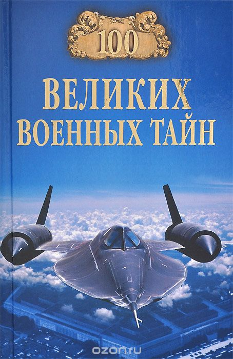

Великие военные тайны истории

Судом над нациями назвал войну известный французский моралист Антуан де Ривароль. И едва ли он заблуждался. История человечества переполнена страданиями и горем, львиная доля которых приходится на бесконечные войны.
Безусловно, война есть убийство, а потому - дело греховное. Однако, хотим мы того или нет, войны оказали огромное влияние не только на ход истории, но и на развитие всей человеческой цивилизации. По мнению ученых, с 3600 года до н.э. вплоть до наших дней произошло около 15000 войн и вооруженных конфликтов. Вполне естественно, что столь многовековая история войн полна загадок, тайн и белых пятен…
"100 великих военных тайн."
На заре цивилизаций.
Так сражались «танки древности».
Куда ходили десять тысяч греков?.
Как Сципион победил Ганнибала.
Почему Спартак не штурмовал Рим.
Что скрывал Тевтобургский лес.
Где «бич божий» потерял свою силу?.
Войны средних веков.
За гроб господень воевали и на море.
Крестовый камень, или забытые войны со шведами.
Почему монголы не взяли Европу, или конец Золотой орды.
Первое огнестрельное оружие на Руси.
Как в средневековье подсчитывали военные потери.
Эпоха стратегов и начало тотальных войн.
Сколько воинов сражалось в Оршинской битве?.
Как «черная банда» подвела Франциска.
Английские разведчики при русском дворе.
Мнимый конец турецкого флота, или как был ранен Сервантес.
Шестичасовое молчание адмирала де Морги.
Твердый орешек для Густава-Адольфа.
Шпионаж при французском дворе.
Зачем Евгений Савойский перевернул фронт?.
Как Наполеон проиграл «битву народов».
Победные войны короля зулусов.
Две небоевые потери южан и северян.
Самая главная военная тайна краснокожих.
Кому была нужна русско-японская война?.
Что помешало японцам ударить по Владивостоку?.
Таинственная история «Гебена».
Диверсионные операции первой мировой.
Молниеносный удар по Маньчжурии.
Он служил республике до конца.
Прибалтийско-скандинавский альянс против советов.
«Вифупаст» - стервятники Геринга в русском гнезде.
Зачем летал в Арктику «Граф Цеппелин»?.
Вторая мировая война (1939-1945).
Первый удар восточного «блицкрига».
Как Муссолини провалил «Барбароссу».
Снова к вопросу о начале войны.
Как Япония не напала на Советский Союз.
Японской торпедой по беженцам.
Двадцать шестой из «дома Павлова».
Операция «Шамиль» - горцы против советской власти.
Роковая ошибка «серого волка».
Почему фюрер ни разу не погиб.
63 дня Варшавского ада - кто виноват?.
Боевая операция без единого выстрела.
«Радостно снова работать вместе с Вами».
Судьбы пленных советских генералов.
Нераскрытая тайна подземного города.
Бросок на Хоккайдо не состоялся.
Лед «холодной войны» и современные конфликты.
Дьенбьенфу, или «Вьетнамский Сталинград».
Гидеон и «ракетная рука» фараона.
Под бомбами во вьетнамском порту.